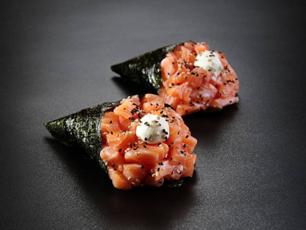
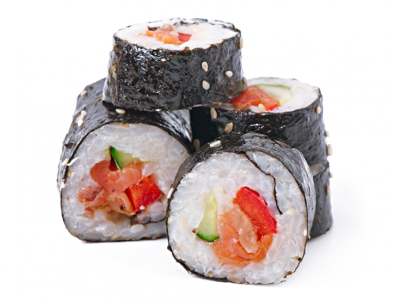
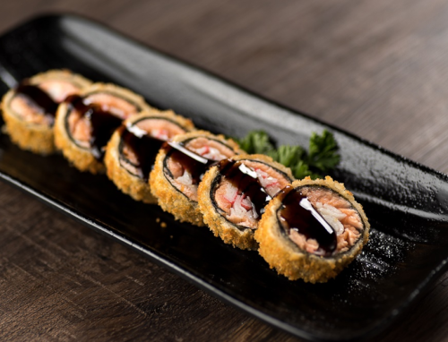
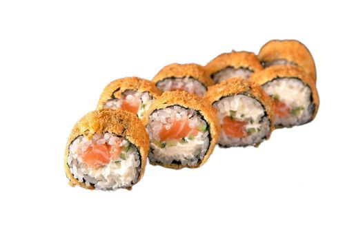

Ingredientes
Descubra a qualidade dos ingredientes frescos e cuidadosamente selecionados em nossa variedade de pratos japoneses. Cada ingrediente é escolhido com atenção, desde o peixe fresco e saboroso até o arroz de alta qualidade e os vegetais crocantes. Nossa prioridade é oferecer uma experiência gastronômica autêntica, trazendo até você o melhor da culinária japonesa em forma de fast food. Aprecie a fusão de sabores únicos e a textura perfeita de cada mordida. Deixe-se encantar pelas nuances sutis dos temperos e desfrute de uma refeição rápida, mas repleta de autenticidade. Nossos ingredientes de qualidade são a base para a criação de pratos japoneses deliciosos e memoráveis.
Temaki
Ingredientes
- Arroz para sushi
- Alga nori
- Salmão Fresco em fatias
- Cream Cheese
Preparo
- Prepare o arroz para sushi de acordo com as instruções da embalagem e deixe esfriar um pouco.
- Coloque uma folha de alga nori em uma esteira de sushi ou em uma superfície limpa.
- Molhe as mãos com água para evitar que o arroz grude. Espalhe uma camada fina e uniforme de arroz sobre a alga nori, deixando uma borda de aproximadamente 1 centímetro sem cobrir.
- No centro do arroz, coloque algumas fatias de salmão fresco e adicione uma porção de cream cheese. Acrescente também algumas tiras de pepino.
- Com a ajuda da esteira ou de suas mãos, comece a enrolar o temaki, dobrando a alga nori sobre o recheio e dando forma de cone. Pressione levemente para garantir que o temaki fique firme.
- Se desejar, você pode polvilhar gergelim torrado sobre o temaki para adicionar sabor e textura extra.

Tekamaki
Ingredientes
- Arroz para sushi
- Alga nori
- Atum fresco em fatias finas
Preparo
- Prepare o arroz para sushi de acordo com as instruções da embalagem e deixe esfriar um pouco.
- Coloque uma folha de alga nori em uma esteira de sushi ou em uma superfície limpa.
- Molhe as mãos com água para evitar que o arroz grude. Espalhe uma camada fina e uniforme de arroz sobre a alga nori, deixando uma borda de aproximadamente 1 centímetro sem cobrir.
- No centro do arroz, coloque algumas fatias de atum fresco.
- Com a ajuda da esteira ou de suas mãos, comece a enrolar o tekamaki, dobrando a alga nori sobre o recheio e dando forma de rolinho. Pressione levemente para garantir que o tekamaki fique firme.

Hot Roll
Ingredientes
- Alga nori
- Arroz para sushi
- Camarão cozido e descascado
- Cream cheese
- Molho teriyaki ou molho agridoce (opcional)
- Farinha de trigo
- Ovos
- Panko (farinha de rosca japonesa)
- Óleo vegetal para fritar
Preparo
- Prepare o arroz para sushi de acordo com as instruções da embalagem e deixe esfriar um pouco.
- Coloque uma folha de alga nori em uma esteira de sushi ou em uma superfície limpa.
- Molhe as mãos com água para evitar que o arroz grude. Espalhe uma camada fina e uniforme de arroz sobre a alga nori, deixando uma borda de aproximadamente 1 centímetro sem cobrir.
- No centro do arroz, coloque uma linha de camarões cozidos e descascados, e adicione uma camada de cream cheese.
- Enrole o sushi, começando pela parte inferior, pressionando suavemente para compactar o recheio.
- Corte o rolo em pedaços do tamanho desejado.
- Passe os pedaços de hot roll na farinha de trigo, depois nos ovos batidos e, por último, na panko, garantindo que fiquem bem empanados.
- Aqueça o óleo vegetal em uma panela ou frigideira funda. Certifique-se de que o óleo esteja bem quente antes de adicionar os hot rolls empanados.
- Frite os hot rolls empanados até ficarem dourados e crocantes. Use uma escumadeira para retirá-los do óleo e coloque-os em papel toalha para remover o excesso de óleo. Sirva os hot rolls quentes, acompanhados de molho teriyaki ou molho agridoce, se desejar

Hot Filadélfia
Ingredientes
- Alga nori
- Arroz para sushi
- Salmão fresco em fatias finas
- Cream cheese
- Molho teriyaki ou molho agridoce (opcional)
- Farinha de trigo
- Ovos
- Panko (farinha de rosca japonesa)
- Óleo vegetal para fritar
Preparo
- Prepare o arroz para sushi de acordo com as instruções da embalagem e deixe esfriar um pouco.
- Coloque uma folha de alga nori em uma esteira de sushi ou em uma superfície limpa.
- Molhe as mãos com água para evitar que o arroz grude. Espalhe uma camada fina e uniforme de arroz sobre a alga nori, deixando uma borda de aproximadamente 1 centímetro sem cobrir.
- No centro do arroz, coloque algumas fatias de salmão fresco e adicione uma camada de cream cheese.
- Enrole o sushi, começando pela parte inferior, pressionando suavemente para compactar o recheio.
- Corte o rolo em pedaços do tamanho desejado.
- Passe os pedaços de hot Filadélfia na farinha de trigo, depois nos ovos batidos e, por último, na panko, garantindo que fiquem bem empanados.
- Aqueça o óleo vegetal em uma panela ou frigideira funda. Certifique-se de que o óleo esteja bem quente antes de adicionar os hot Filadélfia empanados.
- Frite os hot Filadélfia empanados até ficarem dourados e crocantes. Use uma escumadeira para retirá-los do óleo e coloque-os em papel toalha para remover o excesso de óleo.
- Sirva os hot Filadélfia quentes, acompanhados de molho teriyaki ou molho agridoce, se desejar.

Batata Frita
Ingredientes
- Batatas (preferencialmente do tipo próprio para fritura, como a batata russet)
- Óleo vegetal para fritar
- Sal a gosto
Preparo
- Lave e descasque as batatas. Corte-as em palitos de tamanho uniforme.
- Coloque os palitos de batata em uma tigela com água fria e deixe de molho por cerca de 30 minutos. Isso ajudará a remover o excesso de amido e tornar as batatas mais crocantes.
- Escorra bem a água e seque as batatas com papel toalha.
- Em uma panela funda, aqueça o óleo vegetal em fogo médio-alto até atingir a temperatura de cerca de 175°C a 180°C.
- Frite as batatas em pequenas porções, evitando sobrecarregar a panela, por aproximadamente 4 a 5 minutos, ou até ficarem douradas e crocantes.
- Retire as batatas com uma escumadeira e coloque-as em um prato forrado com papel toalha para absorver o excesso de óleo.
- Tempere as batatas fritas com sal a gosto e sirva imediatamente.

Hamburguer
Ingredientes
- Pães de hambúrguer
- Queijo (de sua preferência, como cheddar, mussarela, etc.)
- Carne moída (preferencialmente de boa qualidade, com cerca de 20% de gordura)
- Tomate
- Cebola
- Alface
- Sal e pimenta a gosto
Preparo
- Divida a carne moída em porções iguais e molde-as em formato de hambúrgueres, com cerca de 2 cm de espessura.
- Aqueça uma frigideira ou grelha em fogo médio-alto.
- Tempere os hambúrgueres com sal e pimenta a gosto.
- Grelhe os hambúrgueres por cerca de 4 a 5 minutos de cada lado, ou até atingirem o ponto de cozimento desejado.
- Enquanto isso, prepare os pães cortando-os ao meio e tostando-os levemente em uma frigideira ou chapa quente.
- Monte o hambúrguer colocando uma fatia de queijo sobre o hambúrguer quente para derreter.
- Adicione uma ou duas rodelas de tomate, algumas fatias de cebola e algumas folhas de alface.
- Adicione molhos opcionais, como ketchup, maionese, mostarda ou barbecue, conforme seu gosto.
- Cubra o hambúrguer com a outra metade do pão e sirva imediatamente.

Hot Dog
Ingredientes
- Pães de hot dog
- Salsichas (de sua preferência, como salsicha tradicional ou salsicha de frango)
- Cebola picada
- Tomate picado
- Mostarda
Preparo
- Aqueça as salsichas de acordo com as instruções da embalagem. Isso pode ser feito fervendo-as em água quente ou grelhando-as em uma frigideira.
- Corte os pães de hot dog ao meio, mas sem separar completamente as duas metades.
- Coloque uma salsicha dentro de cada pão de hot dog.
- Adicione cebola picada e tomate picado por cima das salsichas.
- Finalize com uma camada de mostarda a gosto.
- Sirva os hot dogs prontos e aproveite.

Pizza
Ingredientes
- Massa de pizza pré-pronta ou caseira
- Molho de tomate
- Queijo mussarela
- Calabresa fatiada
- Azeitonas fatiadas
Preparo
- Pré-aqueça o forno de acordo com as instruções da massa de pizza.
- Estique a massa de pizza em uma forma própria para pizza ou em uma assadeira.
- Espalhe uma camada generosa de molho de tomate sobre a massa, deixando uma borda livre.
- Cubra a pizza com queijo mussarela ralado ou fatiado.
- Distribua as fatias de calabresa e as azeitonas sobre a pizza.
- Leve a pizza ao forno pré-aquecido e asse de acordo com as instruções da massa de pizza, geralmente entre 10 e 15 minutos, ou até que a massa esteja dourada e o queijo derretido e borbulhante.
- Retire a pizza do forno e deixe esfriar por alguns minutos antes de cortar e servir.